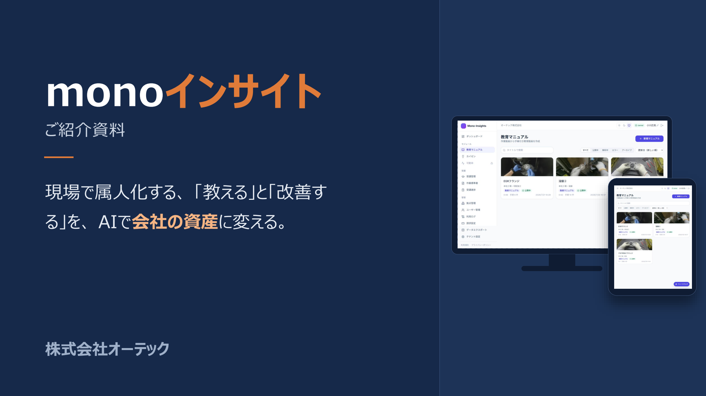

現場の知恵を、
次の力に変える一冊。
機能も、使い方も、料金も。
monoインサイトを詳しく知るための
サービス資料をお届けします。
ご紹介資料を
ダウンロード
機能・導入イメージ・セキュリティ・ご利用の流れを
まとめた資料です。社内でのご検討にもご活用ください。
- 01現場の課題と、解決の全体像
- 02動画マニュアル・カイゼンの画面
- 03料金の考え方と、ご利用の流れ
※資料には、開発中のカイゼン機能や今後の計画も含まれます。

11ページ / PDF01
お客様情報
下記5項目をご入力ください。
資料は無料でご覧いただけます。
資料の準備ができました。
下のボタンから、サービス資料をダウンロードできます。
現場の「教える」を変えるヒントに、お役立てください。